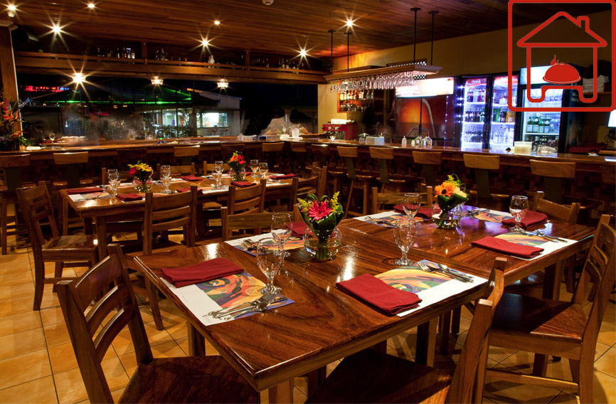

El restaurante La Casa de las Delicias ubicado en la provincia de Limón, le ofrece los mejores platillos de la comida costarricense en nuestro amplio salón o en nuestro balcón con vista al mar.
Horario
Lunes: 11am a 9pm
Martes a Jueves 11am a 10pm
Viernes - Sábado: 11am a 11pm
Domingos: 11am a 9pm
Ubicación
Punta Uva, Limón
Costa Rica
info@casadelasdelicias.cr
8581-3981